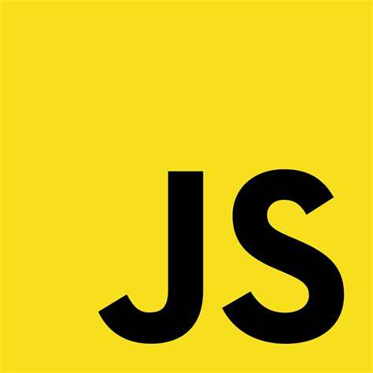

JS

자바스크립트는 복잡한 무언가(주기적으로 내용이 갱신되는 기능이나 능동적인 지도, 변화하는 2D/3D 그래픽, 동영상 등)를 웹페이지에 적용할 수 있게 하는 스크립트 혹은 프로그래밍 언어이다.
자바스크립트는 표준 웹 기술이라는 레이어 케이크에서 세번째 층이라고 볼 수 있다.
다른 두 층(HTML과 CSS)에 대한 보다 자세한 정보는 학습 영역의 다른 부분에서 찾아 볼 수 있다.
자바스크립트는 본래 넷스케이프 커뮤니케이션즈 코퍼레이션의 브렌던 아이크(Brendan Eich)가 처음에는 모카(Mocha)라는 이름으로, 나중에는 라이브스크립트(LiveScript)라는 이름으로 개발하였다.